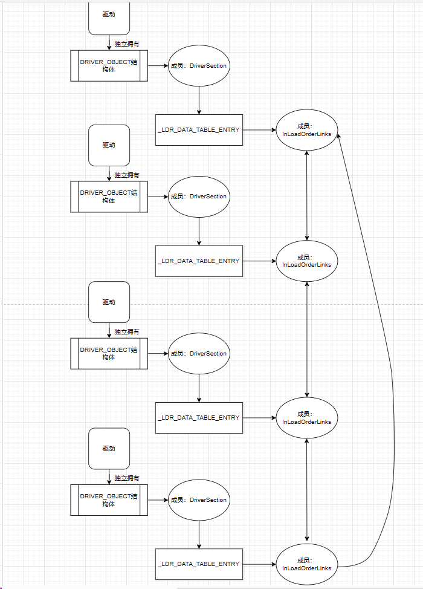
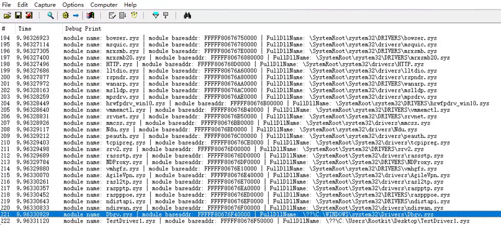

DriverSection成员指向_LDR_DATA_TABLE_ENTRY 的结构体，该结构体每个驱动模块都有一份，在这个结构体中就保存着一个驱动模块的所有信息。同时InLoadOrderLinks成员又是_LIST_ENTRY类型的结构体，
系统中维护了一个双向链表，每个节点都是一个驱动的信息。
- Flink 指向下一个驱动对象的 _LDR_DATA_TABLE_ENTRY
- Blink 指向上一个驱动对象的 _LDR_DATA_TABLE_ENTRY。
typedef struct _LDR_DATA_TABLE_ENTRY {
LIST_ENTRY InLoadOrderLinks; // 遍历的关键
LIST_ENTRY InMemoryOrderLinks;
LIST_ENTRY InInitializationOrderLinks;
PVOID DllBase;
PVOID EntryPoint;
ULONG SizeOfImage;
UNICODE_STRING FullDllName;
UNICODE_STRING BaseDllName;
ULONG Flags;
USHORT LoadCount;
USHORT TlsIndex;
union {
LIST_ENTRY HashLinks;
struct {
PVOID SectionPointer;
ULONG CheckSum;
};
};
union {
struct {
ULONG TimeDateStamp;
};
struct {
PVOID LoadedImports;
};
};
} LDR_DATA_TABLE_ENTRY, * PLDR_DATA_TABLE_ENTRY;
// 第一个成员的结构体类型
typedef struct _LIST_ENTRY {
struct _LIST_ENTRY *Flink;
struct _LIST_ENTRY *Blink;
} LIST_ENTRY, PRLIST_ENTRY;
程序思路就是对循环链表的遍历，差不多如下图所示

#include<ntddk.h>
typedef struct _LDR_DATA_TABLE_ENTRY {
// 和上面一样
} LDR_DATA_TABLE_ENTRY, * PLDR_DATA_TABLE_ENTRY;
NTSTATUS UnloadDriver(PDRIVER_OBJECT driver)
{
DbgPrint("dirver unload success\n");
return STATUS_SUCCESS;
}
NTSTATUS DriverEntry(PDRIVER_OBJECT driver, PUNICODE_STRING reg_path)
{
DbgPrint("2 Hello World\n");
driver->DriverUnload = UnloadDriver;
PLDR_DATA_TABLE_ENTRY pldr = NULL;
PLDR_DATA_TABLE_ENTRY pcurrentmodule = NULL;
// 因为是循环链表，所以可以任意节点开始访问，但是注意设置退出条件
PLIST_ENTRY plistentry = NULL;
PLIST_ENTRY pcurrent = NULL;
pldr = (PLDR_DATA_TABLE_ENTRY)driver->DriverSection;
plistentry = pldr->InLoadOrderLinks.Flink;
pcurrent = plistentry->Flink;
// 判断是否遍历结束
while (pcurrentmodule != plistentry)
{
// 获取LDR_DATA_TABLE_ENTRY结构
pcurrentmodule = CONTAINING_RECORD(pcurrent, LDR_DATA_TABLE_ENTRY, InLoadOrderLinks);
if (pcurrentmodule->BaseDllName.Buffer != 0)
{
DbgPrint("module name: %wZ | module baseaddr: %p | FullDllName: %wZ",
pcurrentmodule->BaseDllName,
pcurrentmodule->DllBase,
pcurrentmodule->FullDllName);
}
pcurrent = pcurrent->Flink;
}
return STATUS_SUCCESS;
}
其中用到了一个很方便的宏，这个宏解决了一个重要的问题：通过结构体中某个元素串起来的一个链表，直到了元素的地址，如何获得其所在结构体的地址。
//根据某个结构体中成员变量的地址，计算出结构体地址。
#define CONTAINING_RECORD(address, type, field) ((type *)( \
(PCHAR)(address) - \
(ULONG_PTR)(&((type *)0)->field)))
- address，成员变量地址
- type，结构体类型
- field，成员变量名
上述代码中根据pcurrent的值（LDR_DATA_TABLE_ENTRY结构体的第一个元素的Flink值）找到结构体LDR_DATA_TABLE_ENTRY的地址
pcurrentmodule = CONTAINING_RECORD(pcurrent, LDR_DATA_TABLE_ENTRY, InLoadOrderLinks);
看到效果还不错
